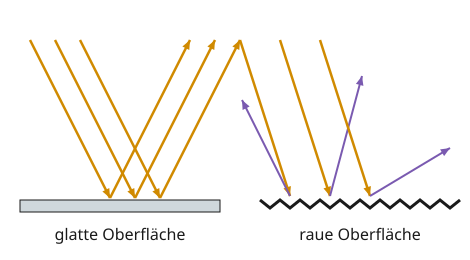

Licht auf Oberflächen
Mit einem KI-Tutor lernen
Ein KI-Tutor erklärt dir diese Seite und hilft dir bei den Übungen. Wähl deinen Assistenten:
Mit Claude öffnen Mit ChatGPT öffnen Mit Mistral Vibe öffnen
Du nutzt dein eigenes Konto beim Anbieter. Der Assistent ist kein Angebot von lernapps.net: lernapps liefert nur Inhalte und Übungen. Die Wahl gilt für alle Seiten, nur auf diesem Gerät.
Warum ist ein Spiegel anders als ein Blatt Papier?
Ein Blatt Papier und ein Spiegel sind beide hell. Im Spiegel siehst du aber dich selbst, im Papier nicht. Und ein schwarzes T-Shirt wird in der Sonne viel wärmer als ein weißes.
Nach dieser Seite kannst du Reflexion, Streuung und Absorption unterscheiden. Du brauchst dafür, was du vom Umlenker beim Sehen weißt: Beleuchtete Körper lenken Licht weiter.
Was Oberflächen mit Licht machen

Vergleiche, wohin die Strahlen links und rechts zurückgehen.
Quelle: eigene Zeichnung. Lizenz: CC-BY-4.0.So liest du die Zeichnung: Orange ist das ankommende Licht. Links, an der glatten Fläche, gehen alle Strahlen in dieselbe Richtung zurück. Rechts, an der rauen Fläche, gehen sie in verschiedene Richtungen.
- Reflexion
Eine glatte Oberfläche wirft das Licht gerichtet in eine Richtung zurück, wie ein Spiegel.
- Streuung
Eine raue Oberfläche wirft das Licht ungerichtet in alle Richtungen zurück, zum Beispiel weißes Papier.
- Absorption
Eine dunkle Oberfläche nimmt das Licht auf (verschluckt es) und wirft wenig davon zurück.
Zerknitterst du glatte Alufolie, entstehen viele kleine Spiegel in alle Richtungen: Aus Reflexion wird Streuung.
Merke
Licht wird an Oberflächen je nach Material unterschiedlich zurückgeworfen. Je glatter die Oberfläche, desto mehr Licht wird reflektiert. Je dunkler die Oberfläche, desto weniger Licht wird reflektiert, sie absorbiert es.
Beispiel
Reflektoren am Fahrrad
Ein Fahrradreflektor (Rückstrahler) hat viele kleine Spiegelflächen. Sie werfen das Licht genau in die Richtung zurück, aus der es kommt.
Fährst du nachts, trifft das Scheinwerferlicht eines Autos deinen Reflektor. Er wirft das Licht zurück zum Auto, also zum Fahrer. Der sieht dich schon von weitem. Deshalb tragen auch Feuerwehr, Polizei, Rettungsdienst und Straßenarbeiter Kleidung mit Reflexstreifen.
Katzenaugen leuchten im Dunkeln aus einem ähnlichen Grund: Hinter der Netzhaut liegt eine Schicht, die Licht zurückwirft.
Übung
Übung
Lösung
Richtige Antwort: ein Spiegel – Reflexion; ein weißes Blatt Papier – Streuung; ein schwarzer Pullover – Absorption
Der glatte Spiegel reflektiert in eine Richtung. Das raue Papier streut das Licht in alle Richtungen. Der dunkle Pullover nimmt das Licht auf.
Mehr dazu:
Übung
Lösung
Es wird in viele verschiedene Richtungen gestreut. richtige Antwort
Die Knicke bilden viele kleine Spiegel, die in verschiedene Richtungen zeigen.
Es wird wie vorher in eine Richtung reflektiert.
So war es bei der glatten Folie. Durch die Knicke zeigen die Stückchen jetzt in verschiedene Richtungen.
Es wird fast ganz absorbiert.
Die Folie bleibt hell und glänzend. Absorbieren tun vor allem dunkle Oberflächen.
Aus der glatten Oberfläche ist eine unebene geworden. Unebene Oberflächen streuen das Licht.
Mehr dazu:
Übung
Lösung
Richtige Antwort: 1. ein Spiegel, 2. weißes Papier, 3. schwarzer Stoff
Der glatte Spiegel wirft fast alles zurück, das helle Papier viel, der dunkle Stoff wenig, weil er das Licht absorbiert.
Mehr dazu:
Offene Aufgabe
Auf einer Insel im Mittelmeer sind viele Häuser weiß gestrichen. Begründe das in zwei bis vier Sätzen physikalisch.
Eine gute Antwort enthält:
Lösung
Im Mittelmeer scheint die Sonne sehr stark. Weiße Wände reflektieren viel Sonnenlicht, dunkle würden es absorbieren und sich aufheizen. Weil ein weißes Haus wenig Licht aufnimmt, bleibt es innen kühler.
Übung
Lösung
Die Reflektoren werfen das Scheinwerferlicht zum Auto zurück. richtige Antwort
Reflektoren werfen Licht in die Richtung, aus der es kommt. So landet es im Auge des Fahrers.
Die Reflektoren leuchten selbst, wie kleine Lampen.
Reflektoren sind keine Lichtquellen. Ohne Scheinwerferlicht bleiben sie dunkel.
Die Reflektoren absorbieren das Licht besonders gut.
Was Licht absorbiert, wirft wenig zurück und ist schlecht zu sehen. Reflektoren tun das Gegenteil.
Reflektoren sind beleuchtete Körper, die das Licht gezielt zur Lichtquelle zurückwerfen.
Mehr dazu: